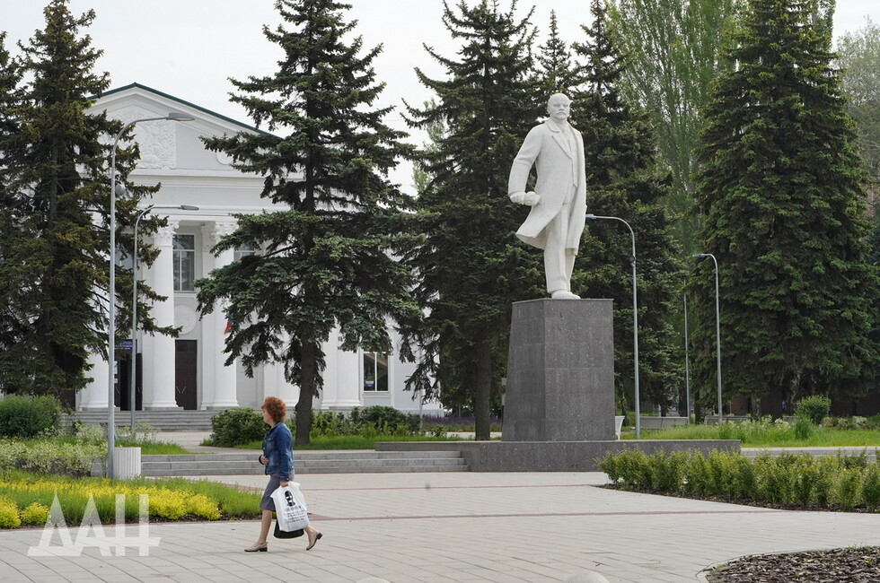
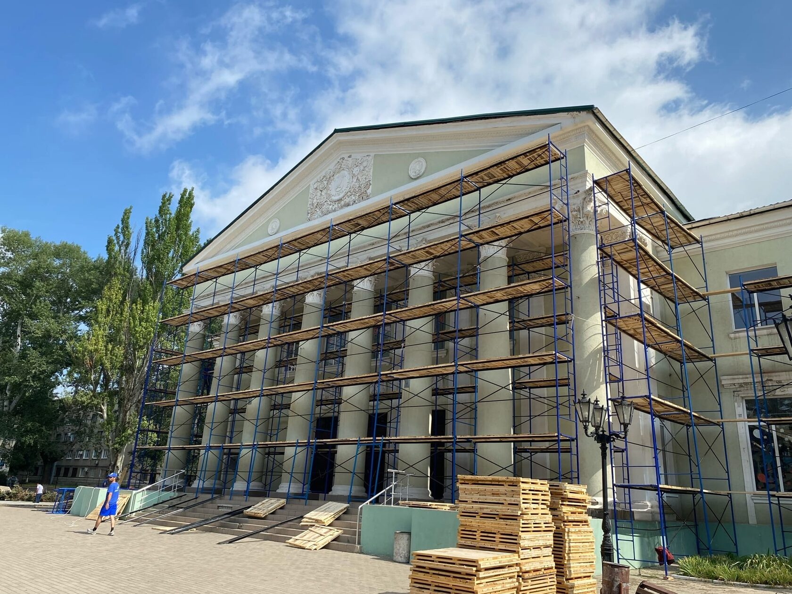
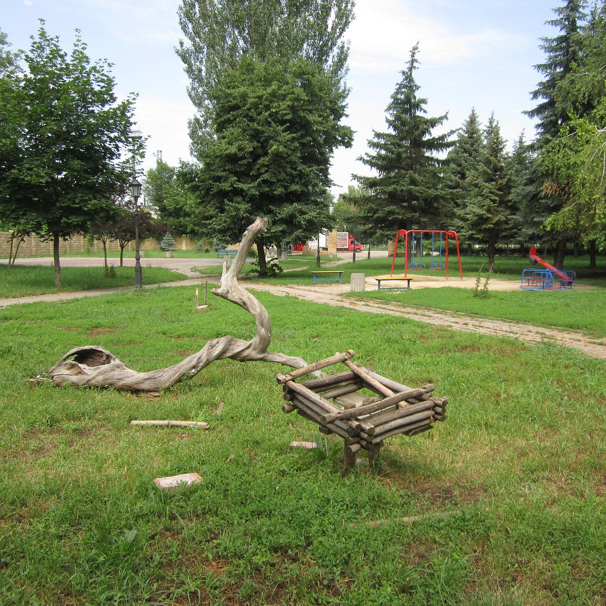
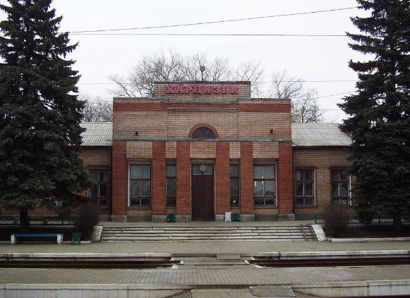

Городской фотоархив
Город, который
помнит
История начинается у рельсов.
Город-промышленник, который хранит свою память в парках, улицах и людях.
1869год основания
48°02′ N / 38°09′ Eкоординаты города

ГОРОДСКОЙ АРХИВ · 202348°02′ N / 38°09′ E
Городской фотоархив
Город в деталях
Места, в которых
видна история




Фотографии: Дворец культуры, РБК, архивный вокзал, Castles.com.ua, площадь, ДАН, Tripadvisor и Encyclopedia of Ukraine. Подробности — в источниках.
Город сегодня
Культура объединяет
В Харцызске проходят встречи, концерты и занятия для детей. Городские библиотеки и Дворец культуры остаются местом, где жители учатся и проводят время вместе.
Культурная жизньМаршрут знакомства